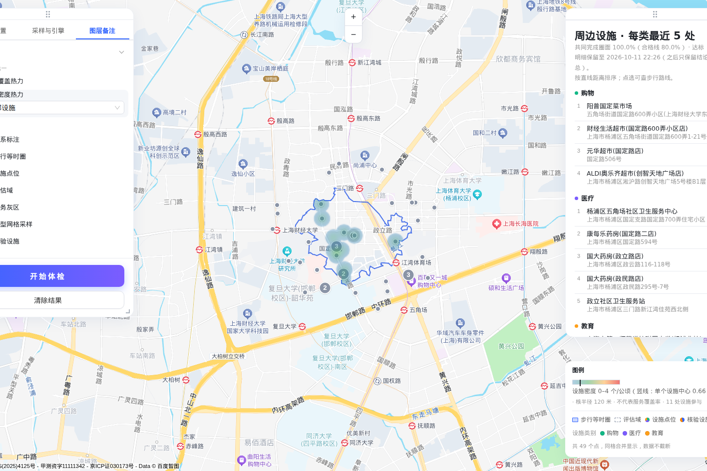

15 分钟能走到哪里？
沿真实步行路网计算可达范围。绕行、河道等障碍、数据不足和计算提前停止，都会在地图上标出来。
步行圈怎么算社区步行可达性分析
输入位置后，可查看 15 分钟步行范围、周边各类民生设施，以及数据不足的区域。
在线工作台用于真实分析，需要后端服务在线；离线 Demo 使用固定模拟数据

指标说明
直线距离近不代表能走过去，设施多也不代表服务可用。两个指标分开计算，各自说明依据。
沿真实步行路网计算可达范围。绕行、河道等障碍、数据不足和计算提前停止，都会在地图上标出来。
步行圈怎么算按类别检查医疗、购物、教育等设施，默认核心三类。先核对数据覆盖情况，再判断 1 公里内是否缺少设施；这里的 1 公里同样是步行距离，不是直线距离。
两个指标的区别具体功能
用预设样例、地图选点或输入经纬度，确定分析起点。
坐标输入在地图上查看 15 分钟范围、已知可达区域、未知区域和计算质量。
步行路网按类别筛选设施，查看名称、位置、圈内状态及来源证据；目录共 10 大类、31 个检索小类，默认核心三类。
设施分类报告展示分析条件和结果，并列明服务缺口、未知区域及其数据来源与限制。
分析报告截图
以上四张截图与首屏同出一轮真实体检：2026-10-11，E8.2、400 档，中心 121.513925, 31.313079，真实百度底图与真实后端；本轮业务状态为「部分证据」，其中 30 条步行路线为实测返回。点图可看原图。截图只说明界面长什么样，不构成精度验收；离线 Demo 入口仍是固定模拟数据。
实现方法
前端展示过程和结果；后端负责调度任务、调用百度和 OSM 数据、保存证据。离线 Demo 用固定模拟数据跑完整流程。
从多个方向扫描并细化边界，估算 15 分钟步行范围；计算提前停止或无法判断的区域会标为未知。
在线工作台可选 · 本机亦可运行使用 OSM 路网辅助范围构建，再用百度步行结果验证；硬约束与显示几何分开处理。
在线工作台可选 · 本机需 OSM 路网这项功能目前只用于离线实验，网页端和在线服务暂不可用。
离线实验 · 未上线性能指标将在统一实测后补充；本站不展示未经验证的数值。
使用限制
报告会列出本次使用的数据和缺失项，并说明结果的适用范围。
用来检查页面、统计和报告流程是否一致，不能当成真实社区结论。
15 分钟回答「步行能走到哪里」，1 公里回答「周边有没有某类设施」。两者都走步行路网，区别是时间与距离两种口径，不互相替代。
数据不足、结果不完整、计算提前停止或服务异常都会保留状态，不会被改写成不可达。
设施数量不代表容量、质量或营业状态，工具也不会给出综合评分。
使用帮助
固定数据 Demo 打开即用，无需安装。真实分析需克隆主仓库，在项目根目录运行 start.bat（Windows）或 start.command（macOS/Linux），并按提示填写百度地图 AK。
在选点面板中切换为「手动输入」，填写经纬度后确认。坐标是 BD09LL（百度坐标），经度在前、纬度在后；演示页的坐标只用于模拟数据。
该方向数据不足、计算未完成或服务异常，暂时无法判断是否可达。具体原因见报告说明。
前者回答「15 分钟步行能走到哪里」（阈值 900 秒），后者回答「周边有没有某类设施」（步行 1000 米标准）。两者都基于步行路网，口径不同，不可相互替代。